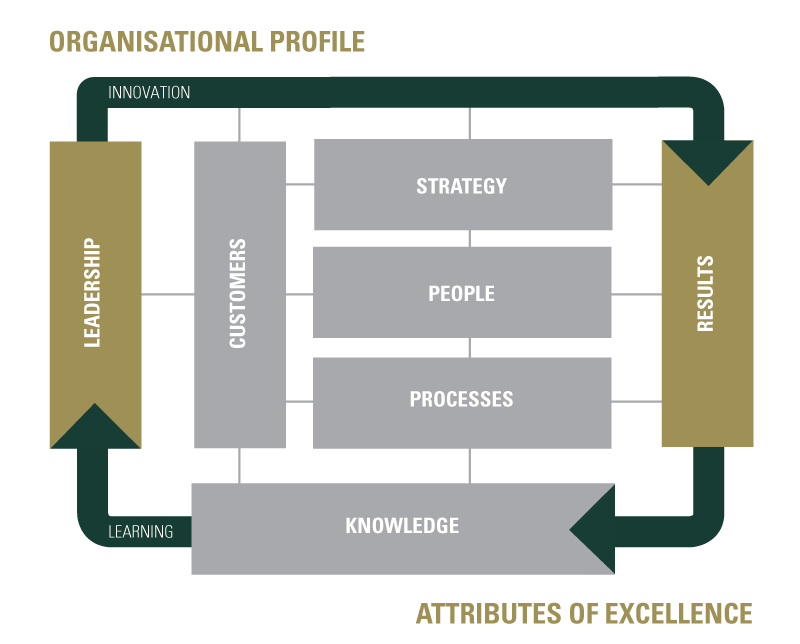

Enterprise Singapore-recognized Registered Management Consultant (RMC, IMCS TR 43:2015 Management Consultants Standard)
with areas of Expertise in Business Excellence, Branding, Marketing, Franchising, Business Strategy Innovation, Human Capital Development,
Financial Management, and Digital Transformation, helping Singapore Enterprises in their management consulting projects to upgrade their
businesses, innovate or venture overseas, under three pillars:
Core capabilities
- Business Strategy Development
- Financial Management
- Human Capital Development
- Service Excellence
- Strategic Brand and Marketing Development
Innovation and Productivity
- Automation
- Process Redesign
- Product Development
Market Access
- Mergers and Acquisition (M & A)
- Pilot Project and Test Bedding
- Standard Adoption
Projects
- Consciousness Infinity Studio Pte. Ltd.: Business Strategy Development
- Heart Spring Spa: Human Capital Development
- iBosses Pte Ltd: Process Redesign
- UCMHP Academy Pte. Ltd.: Business Strategy Development
- WhereHealthBegin Pte. Ltd.: Marketing and Sales